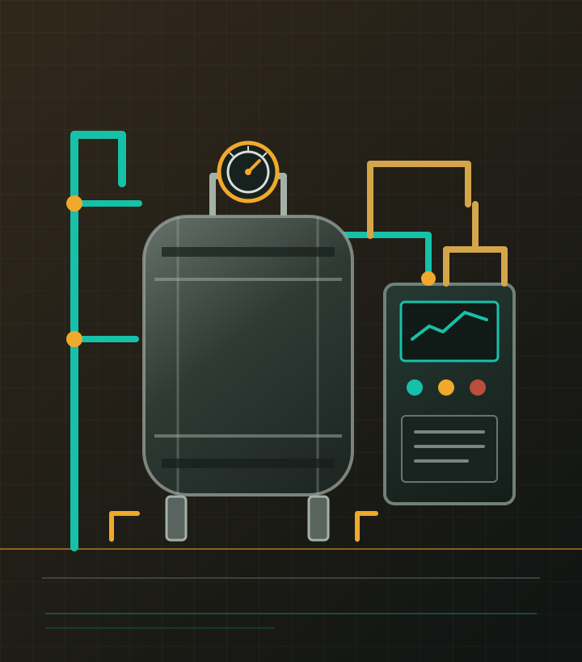

Industrial Boiler Services · Lahore, Pakistan
Coal-Fired Boiler Maintenance in Lahore
IBBS provides industrial engineering support for coal-fired and other high-pressure boiler systems. From maintenance planning and overhauling to burner-related support, we work with plant teams to define the job scope around their equipment and operating needs.

Boiler maintenance and plant support
Boiler work depends on the system design, condition, fuel arrangement and site procedures. IBBS discusses the equipment and maintenance requirement with your team before recommending a scope. Services include coal-fired boiler maintenance and overhauling, burner support, automation-related work, and sourcing of industrial components used in plant maintenance.
IBBS is based in Lahore and serves industrial customers in Pakistan. For a site-specific request, share the boiler type, plant location, current issue and any available equipment information so the team can assess the next step.
Discuss your boiler requirement
Contact IBBS to confirm service availability, scope and quotation. Equipment compatibility and the final work plan are confirmed against the details supplied by the customer.